It shouldn’t come as a surprise, but people across the globe are eager to take part in events that aptitudes a prize. YouTubers have a golden opportunity on their hands in the form of an online contest. If you want to get more subscribers, leads, or sales, then the YouTube giveaways contest can put you on the right path for goal achievement.
YT contest helps in building a solid community and getting the audience to connect with your channel. We have designed this article to give you valuable insight into how you can plan and host a successful contest.
Contents
- 1. How you can organise a YouTube contest
- 2. Select afitting reward for your YouTube contest
- 3. Determine where you want to organize the contest
- 4. Promote your YouTube giveaway contest
- 5. Announce your YouTube contest winner
- 6. Important YouTube contest rules to follow
- 7. Make all YouTube contest options free
- 8. Always consider local law
- 9. Define proper content Rules
- 10. You are responsible for your YouTube giveaway contest
- 11. YouTube talent contest
- 12. YouTube caption contest
- 13. YouTube Dare Contest
- 14. YouTube Content suggestion contest
How you can organise a YouTube contest
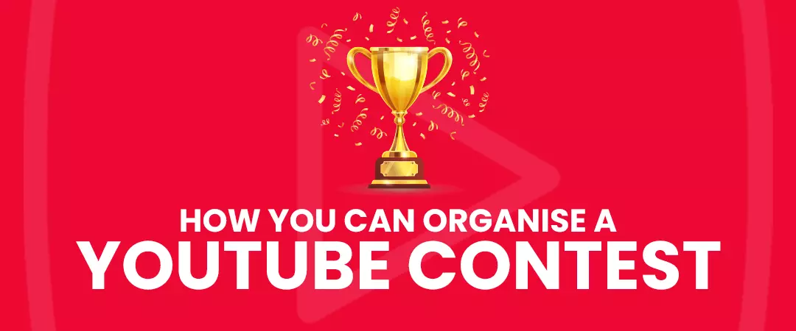
Define your Goals.
It all goes back to having a well-defined goal. Before starting a contest, “why do I need to conduct a giveaway? - should be the first question on your mind. At the end of the event, you would have wanted growth in your audience subscription, increased sales, or promote something. YouTubers who are clear about their goals before planning a YT giveaway contest could achieve better results than those who went head first without a plan in place.
Having a firm grasp on your goal will help you promote and conduct your online Contest.
Set goals that are:Specific.
Attain clarity on what you want to achieve at the end of the contest—sales, followers, subscribers, traffic, promotion, etc.
Measurable.
Determine the means and metrics that you will need to measure the results. For example, do you need analytics software, or will you calculate the metrics manually?
Attainable.
The goal that you set should be realistic and within your capabilities of achievement. Smaller goals are much easier to achieve as compared to larger, more complex targets.
Relevant.
The contest you run should be relevant to what you do and who your audience is. It’s a waste of time and money if you conduct a competition for an Xbox game when most of your audience are PC gamers.
Timely.
When you conduct a contest, you must end it on time. If you have other priorities to take care of besides the giveaway, then you should not unnecessarily drag the event and wrap it up within the stipulated time.
You have allocated a substantial duration of time to gain clarity on your goal. Your goal is your foundation that makes other activities more accessible.
Select afitting reward for your YouTube contest
You have to make sure that the prize you select is relevant to what your channel stands for. Check your YT analytics to find details about your audience. Your viewers' compensation should be something that your viewers want – choosing something otherwise would send people away, and you won't get your desired outcome.
If your channel falls on the larger side and you can afford to shell out money. Then you can consider prizes like all expenses paid vacation, cash rewards, expensive product giveaways, etc.
But suppose you are a small channel and cannot afford expensive prizes. In that case, you can conduct activities like – winner shout-outs, including winner name in video credits, giving away your merchandise, or holding a one-on-one interaction with the winner.
Determine where you want to organize the contest
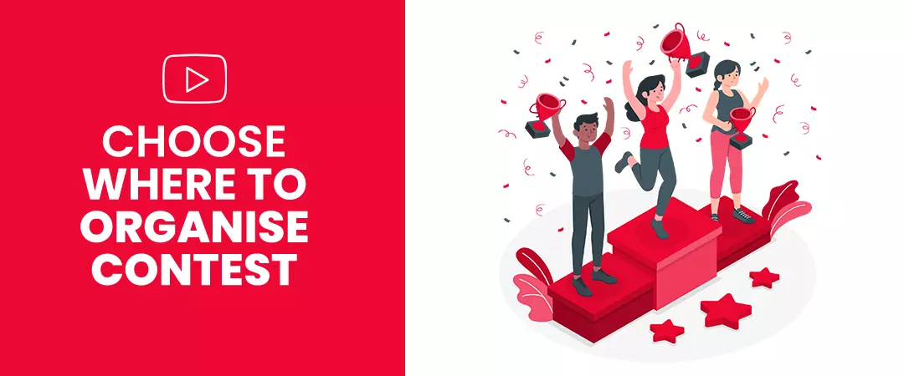
This platform is the primary platform of choice for many creators and they are right to do so. But brands also look to host YT contests on their websites.
There are certain benefits of organisinga YouTube giveaway contest on your website:
-
You can gain valuable campaign insights from YouTube analytics.
-
Generate awareness and loyalty for your brand.
-
Redirect participants to your e-commerce platform.
-
Get a boost in traffic.
-
Designing a landing page that reflects your brand.
-
Your choice of hosting platform will be entirely driven by the SMART goals that you have determined at the start.
Promote your YouTube giveaway contest
Promoting your giveaway is just as important as understanding how to run a YT contest. We are here to help.
Look at the promotional steps below to gain clarity:
Video to announce YouTube giveaway contest
Produce a video on YT revealing the giveaway contest, the prize, and instructions on how people can register for the same, also include a strong YouTube call-to-action.
Use your older videos.
If you have high-performing content on your channel that has managed to bring substantial traffic to your channel, then promote your giveaway on that video via YouTube cards. But be mindful to remove the card once the contest has ended.
Use the power of social media
You have to generate awareness for your contest; hence you have to make sure that you put your event in front of as many eyes as possible. Social media is decisive for the exact purpose. Use the platforms such as Facebook, Instagram, Linked In, and Twitter to get maximum reach and exposure.
Use your email list
People in your list have shown interest in what you do; hence they already opted to receive regular updates. Chances are they are not aware of the YouTube giveaway and are likely to enter the contest if they receive a reminder from you via email.
Even after the contest has run its course, consider posting new videos frequently – this will keep your viewers excited and anxious about the contest results.
Announce your YouTube contest winner
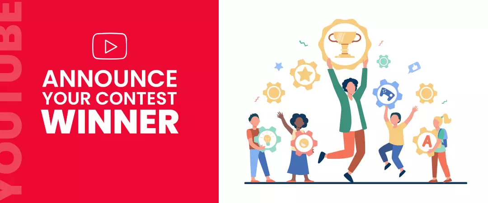
You must wrap things up after the contest ends; you have to officially declare the end of the giveaway by creating a video announcing the winner of the competition.
Do not be laid back and let your creative juices flow when you produce the video; people watching your video should have fun; even the majority that did not win must enjoy watching your video. A little bit of creativity can result in a higher number of views.
If needed, you can disclose the number of people that participated in the event; you are responsible for contacting the winner to give him/her the news.
Next, turn your attention to measuring your contest performance – this is the SMART goal that you had established at the start. Looking at the results, you can gauge the contest's success. You can also find areas that need improvement.
Important YouTube contest rules to follow
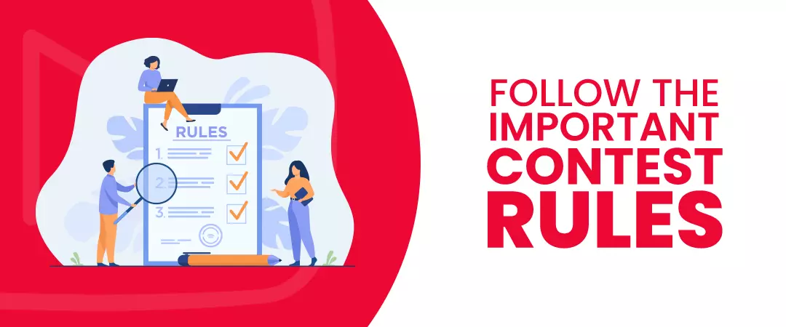
Always read the rules and regulations of the platform before organizing any giveaways; YT maintains a strict stance on online contests. Read the Privacy policy, Terms of Service, community guidelines before you get started.
Following are some important rules to keep in mind:
Make all YouTube contest options free
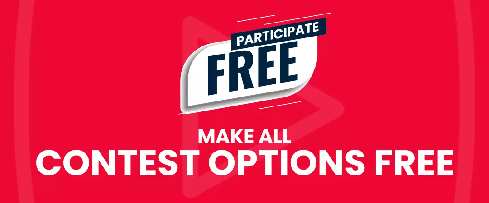
Entry for your audience should be complimentary regardless of any mode of contest you choose.
Always consider local law
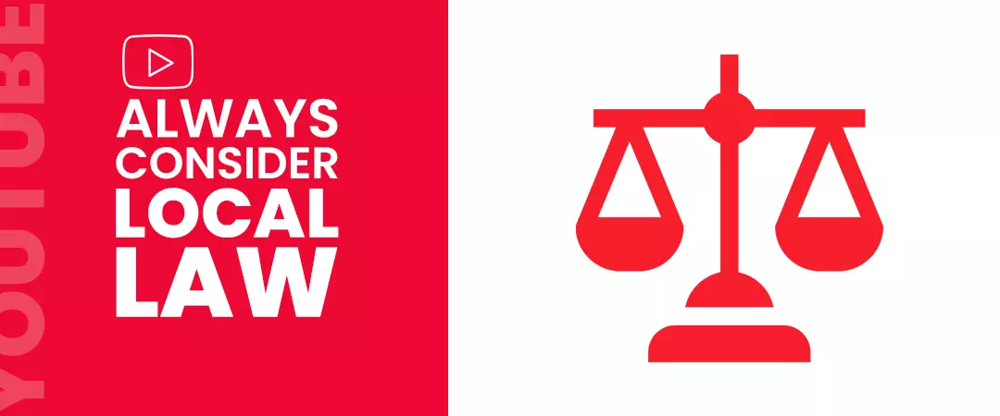
Each country, state, or city has its own specific set of rules and regulations, make it a habit to review all the necessary legislations before organizing your giveaway.
Start by brushing up on the local copyright laws. The resources you utilize in your contest video should be 100% original, or else this platform can flag it for copyright violation.
You have to be clear whether you organize a contest, a lottery, or sweepstakes since every one of these functions under different rules. Select the proper terms and market the YT contest appropriately.
Define proper content Rules
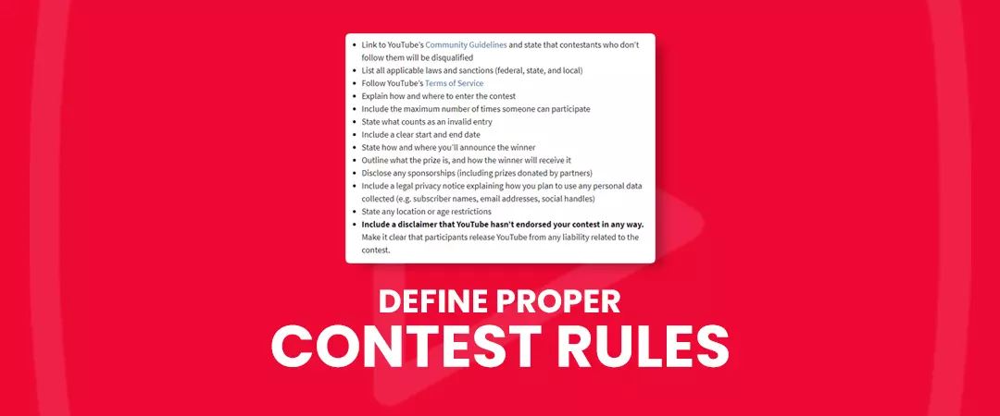
You have to specify a set of official rules for every YT Contest that you organize – this is probably the most significant aspect of all YouTube regulations.
The rules that you specify must:
-
Contain a link to YouTube's Community Guidelineand let your audience know that compliance failure will get them barred from the Contest.
-
State all the necessary laws and permissions.
-
Adhere to YT's Terms of Service.
-
Specify how and where your audience can enter a contest.
-
Include the number of times a participant can access the Contest.
-
Include a privacy notice to describe how you will use the user's data.
-
Disclose the start and end date
-
Specify any age or location constraint.
-
Make clear how and where the announcement of the winner will take place.
-
Define what activity is an invalid entry.
-
Include a disclaimer to certify that this platform has not endorsed your Contest.
-
Reveal the prize to your audience and how the winner can obtain it.
-
Reveal any sponsorship.
You are responsible for your YouTube giveaway contest
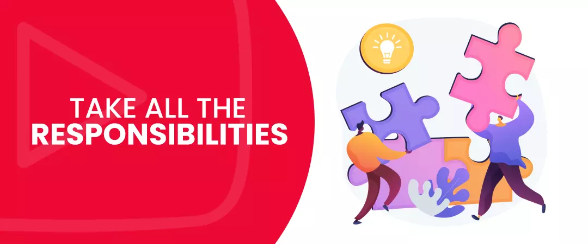
You are entirely responsible for the contest you conduct. As such, you have to make sure that nobody gets hurts while performing any activity.
If you are new to the segment and are not sure about your contest, we recommend starting with something that is less chancy.
Consider trustworthy metric
Many vendors provide services such as free views, likes, and subscribers, and most of the time, they use bots in their offerings. This platform penalizes channels that use third-party services.
If you want to buy real YouTube subscribers, we suggest looking for service providers that are transparent about their services and use safe methods to bring people to your channel. The subscribers you gain are real people who are likely to participate in the giveaways you organize.
YouTube Contest Ideas for high engagement
YouTube talent contest
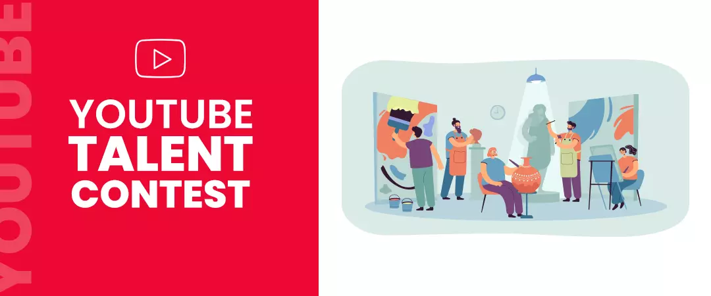
You can organize a contest where you ask your audience to send their videos while performing a task. You can ask your people to dance, act or complete a challenge. The winner of the contest can have his/her video featured on your channel.
For this contest to work, you have to command a sizable following. You'll be amazed by the viewer's willingness to sing and dance for a worthy reward. Hence, consider a prize that will compel the audience to join your contest.
Also, the videos sent in by your fans can be a raw material for your future video content. For example, Liza Koshy created a compilation of videos submitted by the entrants. These are the videos that received fewer votes.
YouTube caption contest
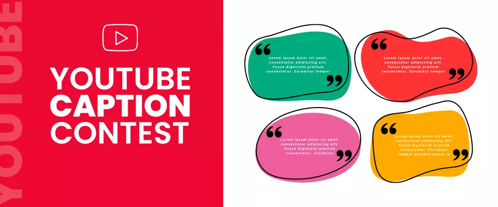
Engagement is crucial for the growth of your channel. One way to get people to engage with your content is by getting them to comment on your videos. Caption contest is one of the YT’scontestoption that work around a simple idea. You host uncaptioned photos or videos and then ask your audience to submit an idea for a caption; submission is usually via comments or online form.
You can decide the winner that gave the most creative caption, or you can let your audience select the best caption and this way also increase engagement.
A good practice would be to lay down specific guidelines for your audience. You can tell your viewers where to place their comments, the word limit of their caption, and disclose the criteria for selecting the winning caption.
YouTube Dare Contest
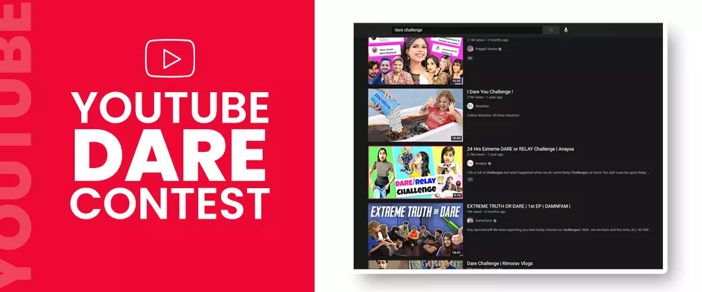
You have yet another YouTube contest option at your disposal. In a dare contest, you challenge your audience to do a particular task. You can ask your viewers to help you reach the target number of subscribers or followers. On challenge completion, you will do a video performing a dare.
In this contest, avoid title clickbait, as it can have a wrong impression on your audience, mainly when you are in the process of growing your channel.
Do not promise your viewers hundreds of free giveaways when you are only capable of giving ten products. Conduct a dare contest only when you can make promises that you can keep. You should be capable of doing whatever you have promised your new subscribers/followers. You can always ask your audience what they would like if they helped you reach your goal.
YouTube Content suggestion contest
This contest is ideal for users on the lower end of the subscriber spectrum; that doesn't mean channels with many subscribers cannot benefit from this YT contest option. You can conduct a giveaway if ever you find yourself in dire need of new content ideas.
What is excellent about a suggestion-based giveaway is that your audiences tell what they want to see from you next. You are not even required to give a prize; just having their ideas implemented gives your audience a sense of satisfaction.
I hope you found this as a relevant guide to organising a successful YouTube giveaway.
Feel free to share!